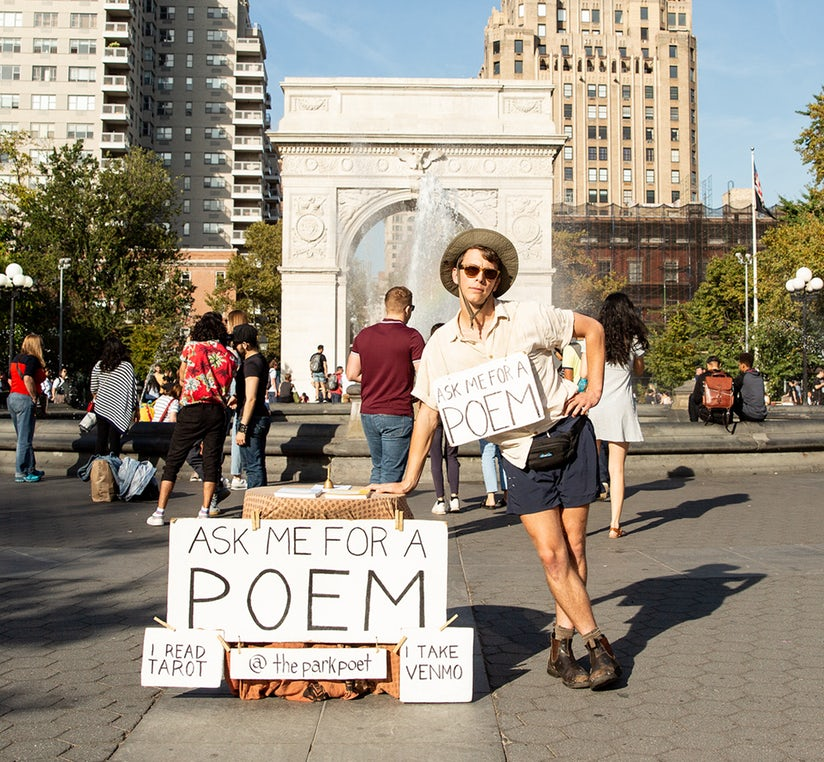
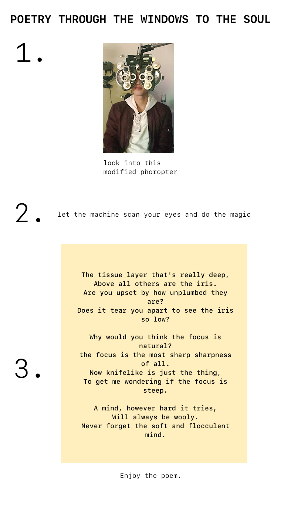

How to raise awareness about the prevention of potential visual
impairment? How to promote good eye health, including encouraging
regular visits to eye doctors?
Conceptualization

Peter Chinman "The Park Poet"
I came up with this idea of an installation piece inspired by park
poets. However, it will be a modified phoropter (an instrument commonly
used during an eye examination) writes the poem instead of a human.
Keywords: park poet, AI, phoropter
Development
Poetry Through the Windows to the Soul
Users will look into the phoropter machine and have their eyes
scanned.
The machine will analyze your eyes' condition, color, emotions.
Then it will write a short poem and print it out for you.
Outcome

Reflection
What I liked about this prototype:
Interesting approach to repurpose an eye exam machine, combining the
element of science with literature
Remind people about taking care of their eyes through this
experience.
Issues/future development:
More modification on the aesthetics of phoropter, making it even
less intimidating.
Make the machine/AI able to diagnose some basic eye conditions and
translate that information into poetic language.